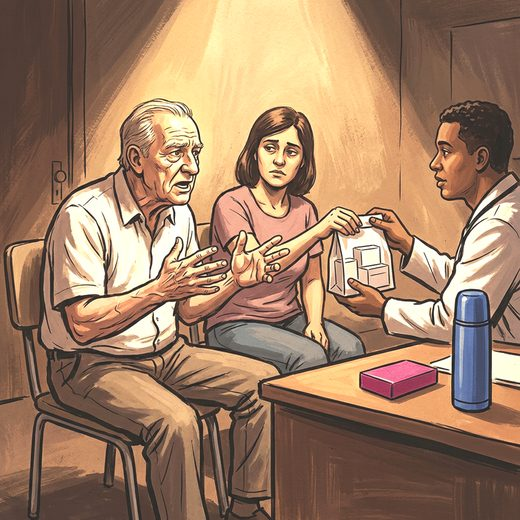

Consulta rápida à beira do leito
Condutas, doses e interações.
Referências da aula · 8
- Muñoz FL, da Cruz RF, Silveira LVA, Diaz MDP. Latent dimension of comorbidities and depression in older adults: a cross-sectional study using National Health Survey data, Brazil, 2019. Epidemiol Serv Saude. 2026;35:e20250722. doi:10.1590/S2237-96222026v35e20250722.pt.DOI
- Shulman KI, Almeida OP, Herrmann N, Schaffer A, Strejilevich SA, Paternoster C, et al. Delphi survey of maintenance lithium treatment in older adults with bipolar disorder: an ISBD task force report. Bipolar Disord. 2019;21(2):117-23. PMID 30375703. doi:10.1111/bdi.12714.PubMedDOI
- Yatham LN, Kennedy SH, Parikh SV, Schaffer A, Bond DJ, Frey BN, et al. Canadian Network for Mood and Anxiety Treatments (CANMAT) and International Society for Bipolar Disorders (ISBD) 2018 guidelines for the management of patients with bipolar disorder. Bipolar Disord. 2018;20(2):97-170. PMID 29536616. doi:10.1111/bdi.12609.PubMedDOI
- Depp CA, Jeste DV. Bipolar disorder in older adults: a critical review. Bipolar Disord. 2004;6(5):343-67. PMID 15383127. doi:10.1111/j.1399-5618.2004.00139.x.PubMedDOI
- Sajatovic M, Strejilevich SA, Gildengers AG, Dols A, Al Jurdi RK, Forester BP, et al. A report on older-age bipolar disorder from the International Society for Bipolar Disorders Task Force. Bipolar Disord. 2015;17(7):689-704. PMID 26384588. doi:10.1111/bdi.12331.PubMedDOI
- Dols A, Kessing LV, Strejilevich SA, Rej S, Sajatovic M, et al. Do current national and international guidelines have specific recommendations for older adults with bipolar disorder? A brief report. Int J Geriatr Psychiatry. 2016;31(11):1295-300. PMID 27442023. doi:10.1002/gps.4534.PubMedDOI
- American Psychiatric Association. Diagnostic and Statistical Manual of Mental Disorders, 5th ed., Text Revision (DSM-5-TR). Washington: APA; 2022.
- 2023 American Geriatrics Society Beers Criteria Update Expert Panel. American Geriatrics Society 2023 updated AGS Beers Criteria for potentially inappropriate medication use in older adults. J Am Geriatr Soc. 2023;71(7):2052-81. PMID 37139824. doi:10.1111/jgs.18372.PubMedDOI
Documentos oficiais
Leis e publicações do Ministério da Saúde sobre o cuidado da pessoa idosa, de acesso livre.
Abrir os documentos